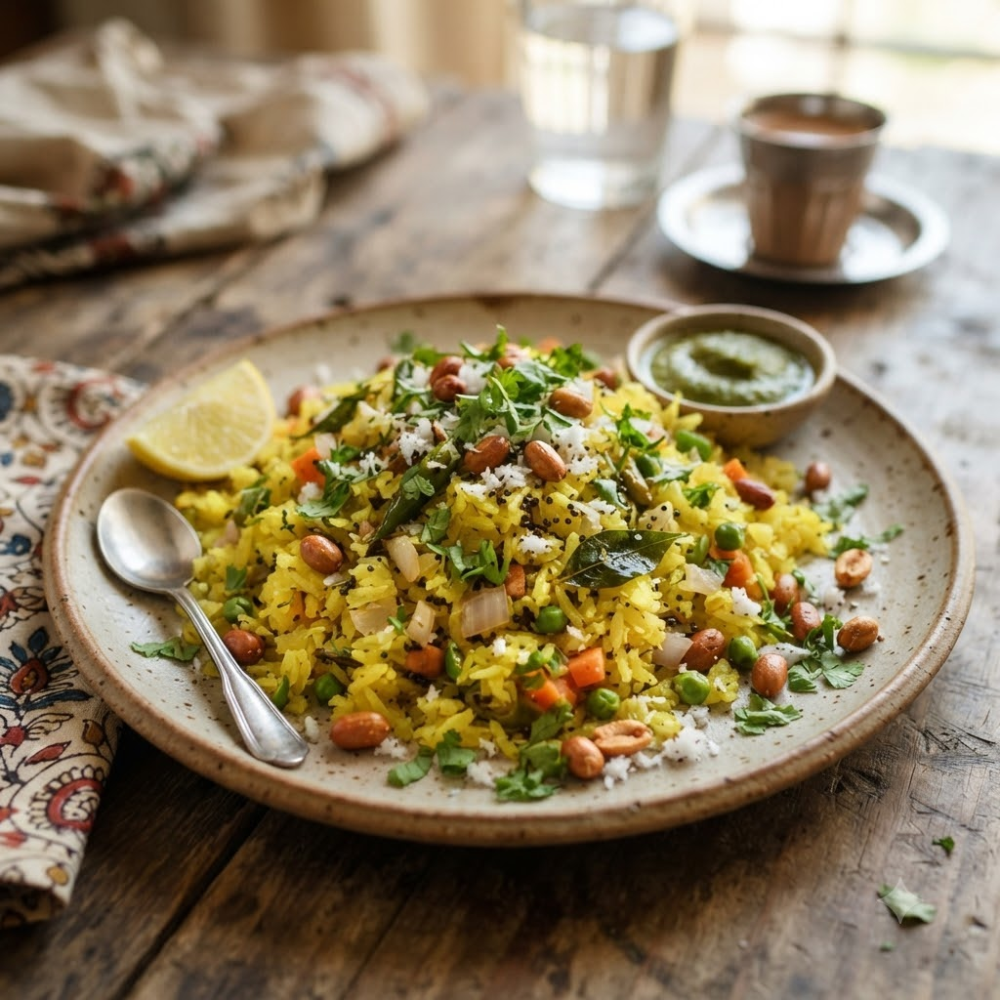

Vegetable Poha

Vegetable Poha
Chef Magic – Sauté Auto 14 min — Serves 3
Prep ahead: Rinse poha (flattened rice) briefly in a sieve under running water and let it soften for 5 minutes before adding.
Ingredients
- 2 cups thick poha, rinsed
- 1 small onion, chopped
- 1 small potato, diced
- 1 tsp mustard seeds (rai)
- 9 curry leaves (kadi patta)
- 1/4 tsp turmeric (haldi)
- 1 tbsp oil
- Salt to taste
- Lemon juice & chopped coriander (dhania) to finish
Method
1Add oil, mustard seeds and curry leaves to the jar; select Sauté (Speed 2–4, ~130–160°C) until seeds splutter.
2Add onion and potato; sauté until soft.
3Add turmeric and salt, then fold in the softened poha; sauté gently 4 minutes to heat through.
4Finish with lemon juice and coriander before serving.